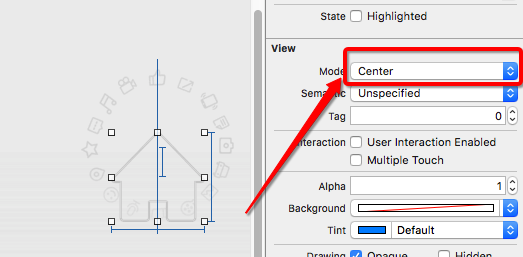

在swift中提供三种处理异常的方式
方式一:try方式 程序员手动捕捉异常
do {
let regex = try NSRegularExpression(pattern: pattern, options: .CaseInsensitive)
} catch {
print(error)
}
guard let regex0 = try? NSRegularExpression(pattern: pattern, options: .CaseInsensitive) else {
return
}
let regex1 = try! NSRegularExpression(pattern: pattern, options: .CaseInsensitive)
// 0.获取命名空间
guard let nameSpace = NSBundle.mainBundle().infoDictionary!["CFBundleExecutable"]
as? String else {
print("没有获取命名空间")
return
}
// 1.根据字符串获取对应的Class
guard let anyClass = NSClassFromString(nameSpace + "." + childVcName) else {
print("没有获取到字符串对应的Class")
return
}
// 2.将对应的AnyClass转成控制器的类型
guard let childVcType = anyClass as? UIViewController.Type else {
print("没有获取对应控制器的类型")
return
}
// 3.创建对应的控制器对象
let childVc = childVcType.init()
class func createButton(imageName : String, bgImageName : String) -> UIButton {
// 1.创建btn
let btn = UIButton()
// 2.设置btn的属性
btn.setImage(UIImage(named: imageName), forState: .Normal)
btn.sizeToFit()
return btn
}
// 外边怎么用
private lazy var composeBtn : UIButton = UIButton.createButton("tabbar_compose_icon_add", bgImageName: "tabbar_compose_button")
composeBtn.addTarget(self, action: "composeBtnClick", forControlEvents: .TouchUpInside)
@objc private func composeBtnClick() {
print("composeBtnClick")
}

// 1.创建动画
let rotationAnim = CABasicAnimation(keyPath: "transform.rotation.z")
// 2.设置动画的属性
rotationAnim.fromValue = 0
rotationAnim.toValue = M_PI * 2
rotationAnim.repeatCount = MAXFLOAT
rotationAnim.duration = 5
rotationAnim.removedOnCompletion = false
// 3.将动画添加到layer中
rotationView.layer.addAnimation(rotationAnim, forKey: nil)
init(frame方法)或者init()方法,必须重写init?(coder aDecoder: NSCoder) // MARK:- 重写init函数
override init(frame: CGRect) {
super.init(frame : frame)
}
// swift中规定:重写控件的init(frame方法)或者init()方法,必须重写init?(coder aDecoder: NSCoder)
required init?(coder aDecoder: NSCoder) {
fatalError("init(coder:) has not been implemented")
}
// 2.创建弹出的控制器
let popoverVc = PopoverViewController()
// 3.设置控制器的modal样式
popoverVc.modalPresentationStyle = .Custom
// 4.弹出控制器
presentViewController(popoverVc, animated: true, completion: nil)